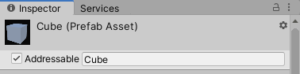
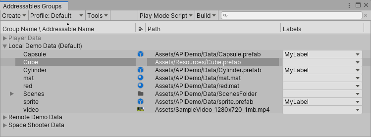
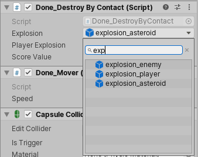

Getting started
Installing the Addressable Assets package
Important: The Addressable Asset System requires Unity version 2018.3 or later.
To install this package, follow the instructions in the Package Manager documentation.
Preparing Addressable Assets
Marking assets as Addressable
There are two ways to mark an asset as Addressable in the Unity Editor:
- In the object's Inspector.
- In the Addressables Groups window.
Using the Inspector
In your Project window, select the desired asset to view its Inspector. In the Inspector, click the Addressable checkbox and enter a name by which to identify the asset.

Marking an asset as Addressable in the Inspector window.
Using the Addressables window
Select Window > Asset Management > Addressables > Groups to open the Addressables Groups window. Next, drag the desired asset from your Project window into one of the asset groups in the Addressables Groups window.

Marking an asset as Addressable in the Addressables Groups window.
Specifying an address
The default address for your asset is the path to the asset in your project (for example, Assets/images/myImage.png). To change the asset's address from the Addressables Groups window, right-click the asset and select Change Address. Please Note: The address cannot contain square brackets [], and will fail the build if it does. This is meant to protect the runtime functionality that parses brackets to locate sub assets. For example, at runtime, loading myAsset[mySubAsset] will try to look up an asset at address myAsset, and then attempt to load the sub asset mySubAsset from that.
When you first start using Addressable Assets, the system saves some edit-time and runtime data assets for your project in the Assets/AddressableAssetsData file, which should be added to your version control check-in.
Building your Addressable content
The Addressables Asset System needs to build your content into files that can be consumed by the running game before you build the application. This step is not automatic. You can build this content via the Editor or API:
- To build content in the Editor, open the Addressables Groups window, then select Build > New Build > Default Build Script.
- To build content using the API, use
AddressableAssetSettings.BuildPlayerContent().
See Build layout report for information on how to generate a report about the layout of your built content.
Assets in Packages
Important: Marking package assets as Addressable requires Unity version 2020.2.0a9 or later.
Creating Addressable Groups in packages
Create a group in the Addressables Groups window. When you are done modifying the group, save the project. Move the group asset and its respective schema assets into your package.
Open a new project that uses your package. If your group has a “Content Packing & Unloading” schema, update its build and load paths. Your group can now be included in your next Addressables build.
If you want to modify the group again, make sure to close all projects that use the package and reopen them once you save all modifications. This will reload the group asset. If your group has a “Content Packing & Unloading” schema, update its build and load paths again.
Using Addressable Assets
Loading or instantiating by address
You can load or instantiate an Addressable Asset at runtime. Loading an asset loads all dependencies into memory (including the AssetBundle data if applicable), allowing you to use the asset when you need to. This does not actually put the desired asset into your scene. To add the asset to your scene you must instantiate. Using Addressables instantiation interfaces will load the asset, then immediately adds it to your Scene.
To access an asset from your game script using a string address, declare the UnityEngine.AddressableAssets namespace, then call the following methods:
Addressables.LoadAssetAsync<GameObject>("AssetAddress");
This loads the asset with the specified address.
Addressables.InstantiateAsync("AssetAddress");
This instantiates the asset with the specified address into your Scene.
Note: LoadAssetAsync and InstantiateAsync are asynchronous operations. You may provide a callback to work with the asset when it finishes loading (see documentation on Async operation handling for more information).
using System.Collections;
using System.Collections.Generic;
using UnityEngine.AddressableAssets;
using UnityEngine;
public class AddressablesExample : MonoBehaviour {
GameObject myGameObject;
...
Addressables.LoadAssetAsync<GameObject>("AssetAddress").Completed += OnLoadDone;
}
private void OnLoadDone(UnityEngine.ResourceManagement.AsyncOperations.AsyncOperationHandle<GameObject> obj)
{
// In a production environment, you should add exception handling to catch scenarios such as a null result.
myGameObject = obj.Result;
}
}
Sub-assets and components
Sub-assets and components are special cases for asset loading.
Components
You cannot load a GameObject's component directly through Addressables. You must load or instantiate the GameObject, then retrieve the component reference from it. To see how you could extend Addressables to support component loading, see our ComponentReference sample.
Sub-assets
The system supports loading sub-assets, but requires special syntax. Examples of potential sub-assets include sprites in a sprite sheet, or animation clips in an FBX file. For examples of loading sprites directly, see our sprite loading sample
To load all sub-objects in an asset, you can use the following example syntax:
Addressables.LoadAssetAsync<IList<Sprite>>("MySpriteSheetAddress");
To load a single sub-object in an asset, you could do this:
Addressables.LoadAssetAsync<Sprite>("MySpriteSheetAddress[MySpriteName]");
The names available within an asset are visible in the main Addressables group editor window.
In addition, you can use an AssetReference to access the sub-object of an asset. See notes in the below section.
For SpriteAtlas objects specifically, note that the atlas inspector has a checkbox for Include In Build. This option does not determine whether the atlas itself is built into AssetBundles, rather it determines how items reference it. When you enable Include in Build, all dependency linkages remain intact. Thus, if you have an Addressable prefab sprite that is dependent on an atlas, the atlas will be pulled into an AssetBundle. Similarly, if you explicilty mark the atlas as Addressable, the prefab will list the atlas bundle as a dependency, and things are hooked up properly at load time. If you disable Include In Build, the linkage is not preserved. When you load an Addressable prefab that is dependent on the atlas, the atlas will be requested, and you must load and manage the connection manually using SpriteAtlasManager.atlasRequested. In this scenario, you can still mark the atlas as Addressable to access each sprite manually.
When viewing a SpriteAtlas in the Addressables Groups window, ensure the SpriteAtlas has been packed if you intend to view the sub-objects in the Window. This can be done by clicking Pack Preview in the inspector of the SpriteAtlas object. If the SpriteAtlas is packed and you still cannot see the sub-objects, check the Show Sprite and Subobject Addresses option is enabled; it is located in the Tools menu of the Addressables Groups window.
Using the AssetReference class
The AssetReference class provides a way to access Addressable Assets without needing to know their addresses. To access an Addressable Asset using the AssetReference class:
- Select a GameObject from your Scene hierarchy or Project window.
- In the Inspector, click the Add Component button, then select the component type. Any serializable component can support an
AssetReferencevariable (for example, a game script, ScriptableObject, or other serializable class). - Add a public
AssetReferencevariable in the component (for example,public AssetReference explosion;). - In the Inspector, select which Addressable Asset to link to the object, by either dragging the asset from the Project window into the exposed
AssetReferencefield, or choosing from the dropdown of previously defined Addressable Assets in your project (shown below).

Referencing an Addressable Asset via script component.
To load or instantiate an AssetReference asset, call its corresponding method. For example:
AssetRefMember.LoadAssetAsync<GameObject>();
or
AssetRefMember.InstantiateAsync(pos, rot);
Note: As with normal Addressable Assets, LoadAssetAsync and InstantiateAsync are asynchronous operations. You may provide a callback to work with the asset when it finishes loading (see documentation on Async operation handling for more information).
Sub-assets
If an asset that contains sub-assets (such as a SpriteAtlas or FBX) is added to an AssetReference, you are given the option to reference the asset itself, or a sub-asset. The single dropdown you are used to seeing becomes two. The first selects the asset itself, and the second selects the sub-asset. If you select "
The Addressable Asset System needs some files at runtime to know what to load and how to load it. Those files are generated when you build Addressables data and wind up in the In addition to the Addressables-specific data, any groups that build their data for local use will also use the Library platform-specific staging location. To verify that this works, set your build path and load paths to profile variables starting with Calling the The For example, given an asset you wish to load from a remote location that takes a non-trival amount of time to download and is reliant on a local bundle as a dependcy you'll see your If you wish to ask the user for consent prior to download, use While it can be advantageous to download assets for your app in advance, there are instances where you might choose not to do so. For example: Rather than using the percent complete value to wait until the content is loaded, you can use the preload functionality to show that the download has started, then continue on. This implementation would require a loading or waiting screen to handle instances where the asset has not finished loading by the time it's needed. The Addressable Asset System generates AssetBundles containing your Addressable Assets when building application content. AssetBundles are platform-dependant, and thus must be rebuilt for every unique platform you intend to support. By default, when building Addressables app data, data for your given platform is stored in platform-specific subdirectories of the Addressables build path(s). The runtime path accounts for these platform folders, and points to the applicable app data. Note: If you use the Addressables Note: If a group has a “Content Packing & Unloading” schema, its Compression mode can be modified in the Inspector window. For optimal asset loading times regardless of platform, only use LZ4 for local content and LZMA for online content. It is a good practice to logically collect assets into multiple groups rather than put them all in one large group. The key benefit of this method is to avoid conflicts in version control systems (VCS) when multiple contributors make edits to the same file. Having one large asset group might result in the VCS's inability to cleanly merge these various changes. After running a build where you have multiple Scenes in an Addressable Assets group, those Scenes will become interdependent if: If you modify even one of these grouped Scenes then perform a content update build, all the interdependent Scenes will move together into a new Content Update group. Content Catalogs are the data stores Addressables uses to look up an asset's physical location based on the key(s) provided to the system. By default, Addressables builds the local content catalog for local Addressable Groups. If the Build Remote Catalogs option is turned on under the AddressableAssetSettings, then one additional catalog is built to store locations for remote Addressable Groups. Ultimately Addressables only uses one of these catalogs. If a remote catalog is built and it has a different hash than the local catalog, it is downloaded, cached, and used in place of the built-in local catalog. It is possible, however, to specify additional Content Catalogs to be loaded. There are different reasons you might decide loading additional catalogs is right for your project, such as building an art-only project that you want to use across different projects. Should you find that loading additional catalogs is right for you, there is a method that can assist in this regard, For To help prevent you from needing to download a remote catalog every time, if you provide a One additional note: You'll notice this method comes with a parameter Build considerations
Local data in StreamingAssets
StreamingAssets folder, which is a special folder in Unity that includes all its files in the build. When you build Addressables content, the system stages those files in the Library. Then, when you build the application, the system copies the required files over to StreamingAssets, builds, and deletes them from the folder. This way, you can build data for multiple platforms while only having the relevant data included in each build. [UnityEngine.AddressableAssets.Addressables.BuildPath] and {UnityEngine.AddressableAssets.Addressables.RuntimePath} respectively. You can specify these settings in the AddressableAssetSettings Inspector (by default, this object is located in your project's Assets/AddressableAssetsData directory).Downloading in advance
Addressables.DownloadDependenciesAsync() method loads the dependencies for the address or label that you pass in. Typically, this is the AssetBundle.AsyncOperationHandle struct returned by this call includes a PercentComplete attribute that you can use to monitor and display download progress. You can also have the app wait until the content has loaded.Regarding
PercentCompletePercentComplete takes into account several aspects of the underlying operations being handled by a single AsyncOperationHandle. There may be instances where the progression isn't linear, or some semblance of linear. This can be due to quick operations being weighted the same as operations that will take longer.PercentComplete jump to 50% before continuing. This is because the local bundle is able to be loaded much quicker than the remote bundle. However, all the system is aware of is the need for two operations to be complete. Addressables.GetDownloadSize() to return how much space is needed to download the content from a given address or label. Note that this takes into account any previously downloaded bundles that are still in Unity's asset bundle cache.
Building for multiple platforms
BuildScriptPackedPlayMode script in the Editor Play mode, Addressables will attempt to load data for your current active build target. As such, issues may arise if your current build target data isn't compatible with your current Editor platform. For more information, see documentation on Play mode scripts.Grouping assets
Building scenes that are packed together
Packed Assets in the Project window, the group's Bundle Mode is set to Pack Together.Loading Content Catalogs
LoadContentCatalogAsync. LoadContentCatalogAsync, all that is required is for you to supply the location of the catalog you wish to load. However, this alone does not use catalog caching, so be careful if you're loading a catalog from a remote location. You will incur that WebRequest every time you need to load that catalog..hash file with the hash of the catalog alongside the catalog you're loading, we can use this to properly cache your Content Catalog. Please Note: The hash file does need to be in the same location and have the same name as your catalog. The only difference to the path should be the extension.autoReleaseHandle. In order for the system to download a new remote catalog, any prior calls to LoadContentCatalogAsync that point to the catalog you're attempting to load need to be released. Otherwise, the system picks up the Content Catalog load operation from our operation cache. If the cached operation is picked up, the new remote catalog is not downloaded. If set to true, the parameter autoReleaseHandle can ensure that the operation doesn't stick around in our operation cache after completing.